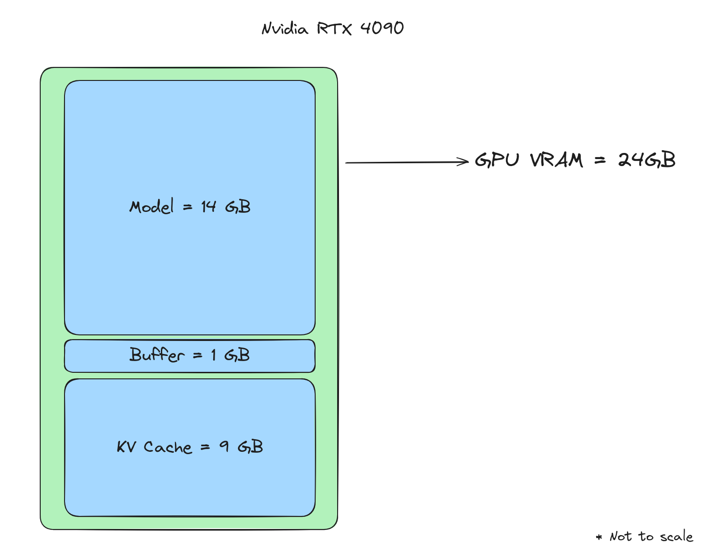

Throughput, why?
If we want to build efficient applications on top of current LLMs, there are currently two challenges:
- Improving Inference latency: The speed with which the model returns the tokens per second
- Improving Inference throughput: The total number of requests that the model can serve in parallel
Inferencing LLMs with lower latency comes down to working around the limitations of the GPU’s memory bandwidth [1]. FlashAttention, speculative decoding, and KV caching are ways in which one can improve the latency of the model.
Increasing inference throughput comes down to effectively managing the available VRAM of the GPU. Given a limited budget of GPU VRAM, there are various areas where improvements can be made:
- Reducing the size of the model: By quantization or knowledge distillation eg: GPTQ
- Batching[2]: Batching more requests in the same amount of GPU VRAM
- Separating prefill and decoding stages of generation [8]
One can refer to this [5] blog by Nvidia to get an overview of the above concepts.
For this blog, let's zoom into one specific aspect of improving throughput, i.e. batching. After the model is loaded in the GPU VRAM, whatever remaining memory is available to us is reserved for the KV cache and serving the requests. The only lever that we can control here apart from the model size is the KV cache. Efficiently managing this KV cache can help us dramatically increase throughput by enabling us to batch more requests. For certain use cases, it can increase the throughput by 20x compared to native HuggingFace implementation.
One such library that helps us in achieving that is vLLM. vLLM deploys LLMs on GPUs and focuses on:
- Allocating the KV cache in the most efficient way possible
- This in turn, allows us to increase the batch size and server more requests per minute
In this blog, we will learn about the intuition behind vLLM, and its inner workings and also simulate it for a real-world application to understand the nuances and limitations of the library.
Setup
Taking real-world numbers around model sizes and GPU VRAM can help visualize and validate the workings of vLLM. Let us consider a case of deploying a Mistral 7B model on the highest-end consumer-grade GPU (Nvidia RTX 4090). If we choose to deploy the model at half-precision (FP 16, each parameter taking 2 bytes), the model would occupy ~14 GB of the VRAM from the available 24 GB VRAM on a 4090 GPU. Assuming an overhead of 1 GB, the GPU would have 9 GB of VRAM available. This 9 GB of available VRAM will be reserved for the KV cache.

Figure 1: Memory layout of the GPU
In our scenario, we would assume 8k as the context length to serve the model. Whenever a request arrives, the model computes the attention scores for all the prompt tokens and then generates one token at a time using autoregressive decoding. While decoding, it requires some VRAM on the GPU to store the token. A single token would take 0.125MB of VRAM to be stored in the KV cache.
|
Token size calculation
For every token, we need to store its corresponding tokens for K and V matrices. We also need to store it for all the layers and all the attention heads.
The KV cache for a single request on the complete context length of the model would be 1 GB (8k * 0.125 MB). |
A case for a single GPU serving a single request
If we decide to serve only a single request at a time with this GPU, we would be wasting a lot of resources. Given that 9 GB of VRAM is available for KV cache, the model can store cache for 72k tokens (9 GB/ 0.125 MB). Considering all of the VRAM to be reserved for a single request, the space for 64k tokens (72k-8k) would be wasted since the model has a context length of only 8k tokens. The throughput of the model would be very low (only a single request is being processed at a time) and it is not using all of the VRAM of the GPU available to it. It would be wasting 8 GB of memory for every request.
This is termed as external fragmentation. This is clearly not the best way to utilize the GPU for serving LLMs. Figure 2 shows the extreme version of external fragmentation.
Figure 2: Inside the KV cache: Single request
A case for a single GPU serving multiple requests
How can we improve upon this? Enter batching. In batching, we serve multiple requests at the same time taking advantage of the parallelism of GPUs. Let’s consider a scenario where we are serving multiple requests at the same time of 8k context length each. GPU would need to pre-allocate the space for 8k tokens for every request. For every request, the GPU would need 1 GB of VRAM to store the KV cache. Hence, it would be able to serve 9 requests concurrently (9 GB/ 1 GB). This would avoid external fragmentation in our scenario, but it could lead to another problem.
One thing to note here is that every request might not generate 8k tokens. Request 1 may end up generating 4k tokens, Request 2 may end up just generating 2k tokens, and so on. But since we had already reserved space for all the 8k tokens, we are wasting the memory and not utilizing the complete memory. This is called internal fragmentation.
There can be another scenario where after allocating the memory for all the requests, the available VRAM of the GPU is less than the memory required for a single request. In this scenario, the memory for the request will not be allocated and the remaining memory will be wasted.
Figure 3: Inside the KV cache: Multiple requests
A case for a single GPU serving multiple requests efficiently
So, is there any improvement possible over the naive batching method we discussed earlier? Yes, indeed there is a way. Enter vLLM.
Let’s assume that the complete memory of the GPU is broken down into small chunks of memory called blocks. Each block is equivalent to the memory required for 16 tokens (i.e. in our example, 0.125 MB * 16 = 2 MB). Once we allocate memory for a block, even partially, it won't be available for any other allocation.
Since every request might not need 8k tokens, let’s assume that on average every request would require 6000 tokens. GPU will allocate 375 blocks (6000/16) of memory for the request. These blocks are not stored in a contiguous layout in the memory. Hence, we would need to maintain an address book that maps every request to its corresponding blocks. This is the core of how vLLM allocates memory.
Figure 4: vLLM token to block mapping. Source [7]
Every incoming request is allocated these blocks as and when requested. This solves 2 problems:
- The request only allocates memory required for its generation instead of pre-allocating for the complete context length of the model. The memory allocation happens at the block level, so technically memory is allocated for 16 tokens at a time. This reduces internal fragmentation significantly
- If the request uses 1.5k tokens, we need to allocate memory only for 94 blocks i.e. 94 * 2 MB = 184 MB, instead of 1 GB for the complete 8k context length of the model
- A single request’s tokens can be stored in multiple blocks
- The complete memory is broken down into equally sized blocks, so even external fragmentation is minimized. The block size is chosen such that it fills the available GPU memory evenly.
The approaches defined above help in utilizing the GPU VRAM efficiently. Given the block size of 2 MB, vLLM can store a total of ~4500 blocks. If each request needs 375 blocks (6k tokens on average) during its lifetime, the GPU would have memory to serve 12 requests in parallel. By using the KV cache more effectively and allocating memory in blocks instead of complete context length, vLLM has increased the throughput from 9 to 12 in our example.
This is how vLLM helps in increasing the batch size and throughput of any model. For computing attention over tokens distributed in non-contagious blocks, vLLM has introduced Paged Attention. Paged Attention are optimized CUDA kernels to access tokens from different blocks and compute attention scores over them.
Inside the simulation
To understand the behavior of vLLM in production, let us simulate a real scenario of a chat application. This chat application uses an LLM and is being served by vLLM. For chat applications, we have another dimension in that a single chat can have multiple turns of conversation alternating between user and assistant messages.
Figure 5: A multi-turn conversation. From the perspective of an LLM, all of these messages are a part of a single request. As the conversation progresses, every new message from the user gets appended to the same request and is sent to the LLM again
Our objective is to predict the behavior of vLLMs and try to replicate them in the experiments. To start with, let's consider some simulation parameters (similar to our example in the previous section):
- Expected chats to start per second: 0.01 (1 chat per 10 seconds)
- The average number of turns in each chat: 10
- Average input token length at each turn in the chat: 200
- Average output token length at each turn in the chat: 400
- Average latency for each turn in the chat: 10s [4]
- Average number of tokens required for a single chat session: (200 + 400) * 10 = 6000
- The average number of blocks required for a single chat session: is 375
For serving an LLM, let’s take the Mistral 7B model deployed at half precision. Taking the model parameters,
- Model dimension: 128
- Number of layers: 32
- Number of KV heads: 8
- Input sequence length: 8192
According to these parameters, we would require:
- 0.125 MB of memory per token in KV cache
- 2 MB of memory per block (assuming block size to be 16 tokens, 0.125 * 16 = 2 MB)
Assuming 9 GB of KV cache available for our use
- We can store 4608 blocks in GPU VRAM (9GB/2MB)
- As calculated above, given an average of 375 blocks per chat session and 4608 blocks available, we can hold 12 (floor(4608/375)) conversations in a single GPU and serve them in parallel
This simulation gives an idea of how to understand what traffic can be served by an LLM server using vLLM. Here are some experimental results:
#TODO: Add experiment results
An overview of all the parameters we discussed is mentioned below for reference -
Yellow blocks can be updated, and green blocks are calculated ones.
|
Model Parameters |
Value |
Units |
|
Model size |
7.00 |
B |
|
Model dim |
128 |
|
|
Model layers |
32 |
|
|
Model KV heads |
8 |
|
|
Bytes per parameter |
2 |
|
|
Input sequence length |
8192 |
|
|
|
|
|
|
vLLM Parameters |
|
|
|
Block size |
16 |
|
|
|
|
|
|
GPU Parameters |
|
|
|
Memory |
24 |
GB |
|
Utilization |
100% |
|
|
Buffer |
1 |
GB |
|
|
|
|
|
Simulation params |
|
|
|
Incoming chats per second |
0.1 |
req/s |
|
Total turns in a chat |
10 |
|
|
Input tokens in a turn |
200 |
|
|
Output tokens in a turn |
400 |
|
|
|
|
|
|
Experimental results |
|
|
|
p95 latency per turn |
10 |
s |
|
|
|
|
|
Calculations |
|
|
|
Memory per token |
0.125 |
MB |
|
Memory per block |
2 |
MB |
|
Memory remaining for KV cache |
9 |
GB |
|
Total token length of a chat |
6000 |
|
|
Blocks that can be stored in KV cache |
4608 |
|
|
Tokens that can be stored in KV cache |
73728 |
|
|
Total chats that can be served concurrently at full length |
12 |
|
|
Time to saturate a single GPU |
120 |
s |
|
E2E time for a chat |
100 |
|
|
Total GPUs required |
1 |
|
|
Waiting time for a single request in the queue after the concurrency limit |
0 |
s |
|
Toal latency for a request in the queue after the concurrency limit |
10 |
s |
You can make a copy of the following sheet and play with simulation parameters to understand the requirements. You can find the code used to run the simulation here.
Notes
vLLM does a few more things:
- KV cache reuse: By reusing the KV cache for different requests, a new request can skip computing the attention scores for the common tokens. This translates to lower latency. However, this is not the contribution of this paper. KV caching is a common technique used during LLM serving
- Single prompt, multiple generations: vLLM can cache a common prompt or prefix and use that for multiple generations. This is similar to the above and helps in reducing latency
- Parallel sampling and beam search: Following on from the above, vLLM also implements KV cache reuse for parallel sampling and beam search.
- Pause the world: Whenever a new request comes in between the decoding stage of ongoing requests in the batch, vLLM pauses the generation of requests in the batch and computes the KV cache for the new request. Once the KV cache is computed, it adds it to the batch and continues decoding the new batch
- This results in higher latency if too many requests are coming back to back
- vLLM is working to update this behavior
- Queue: vLLM also provides a FastAPI server on top of its backend. It implements queues that store the request that vLLM can not serve if the GPU memory is full
References
These are some of the references that I have linked throughout the blog and some general recommended reading for getting a better understanding of the concepts we discussed in the blog.
- Making Deep Learning go Brrrr From First Principles
- How continuous batching enables 23x throughput in LLM inference while reducing p50 latency
- For a single token generation, the latency is usually bound by the memory bandwidth of the GPU. Considering Nvidia 4090 which has a memory bandwidth of 1008 GB/s and Mistral 7B which has 14 GB parameters, the ideal estimate of latency would be 72 tok/s (1008/14). In the real world, you can expect to get around 60 tok/s
- For 600 tokens, the total time comes around to be 10s (600/60)
- Refer to this blog for more explanation: Transformer Inference Arithmetic | Kipply's blog
- Mastering LLM Techniques: Inference Optimization | NVIDIA Technical Blog
- LLM Inference Performance Engineering: Best Practices | Databricks
- vLLM
- Throughput is Not All You Need: Maximizing Goodput in LLM Serving using Prefill-Decode Disaggregation | Hao AI Lab @ UCSD
Written by Romit Jain